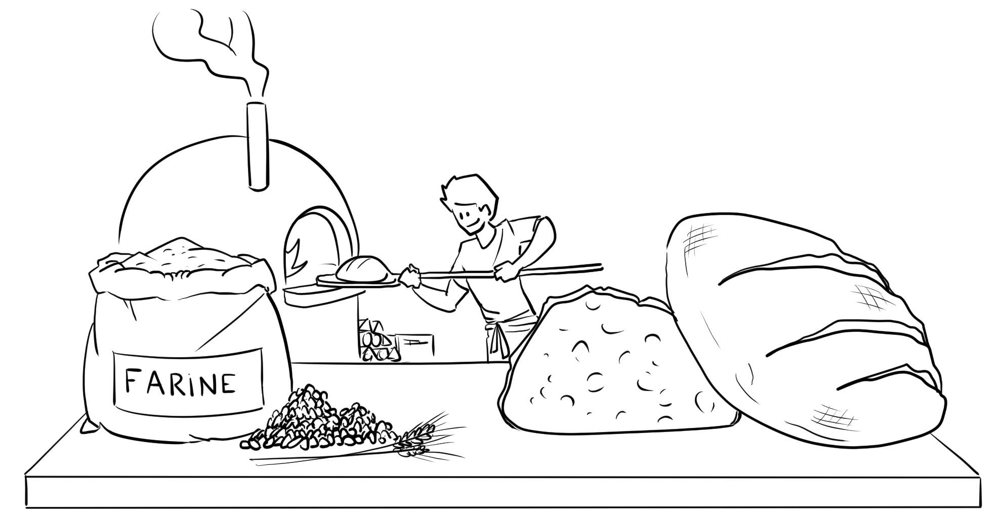
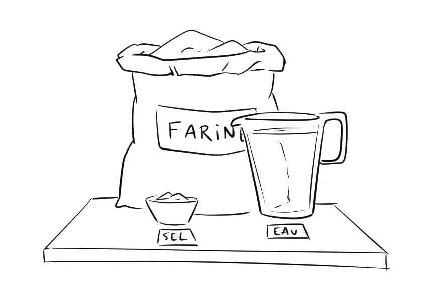
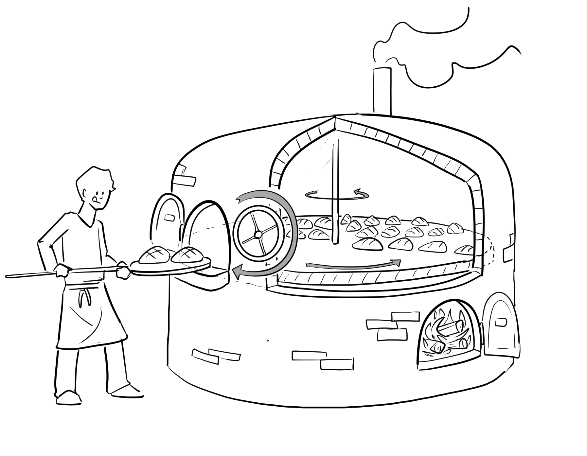
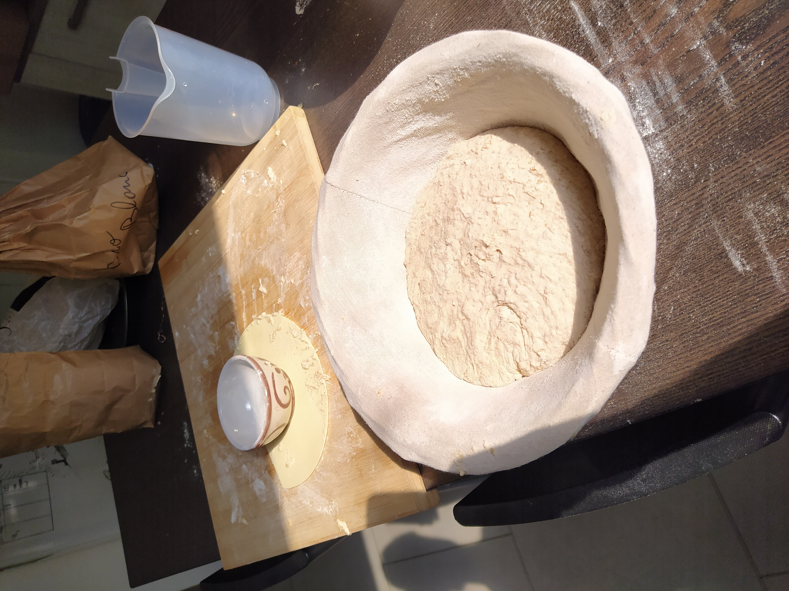
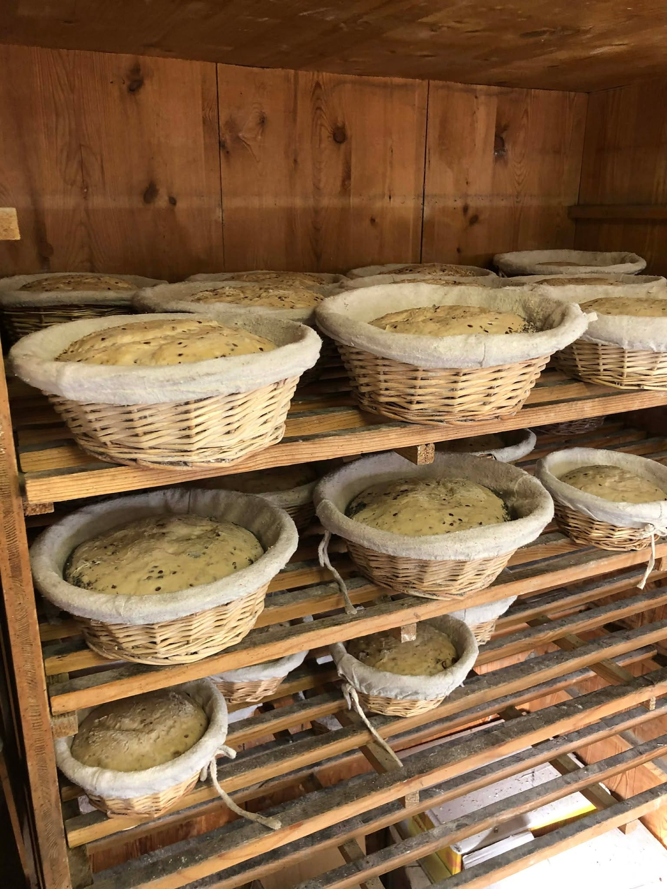
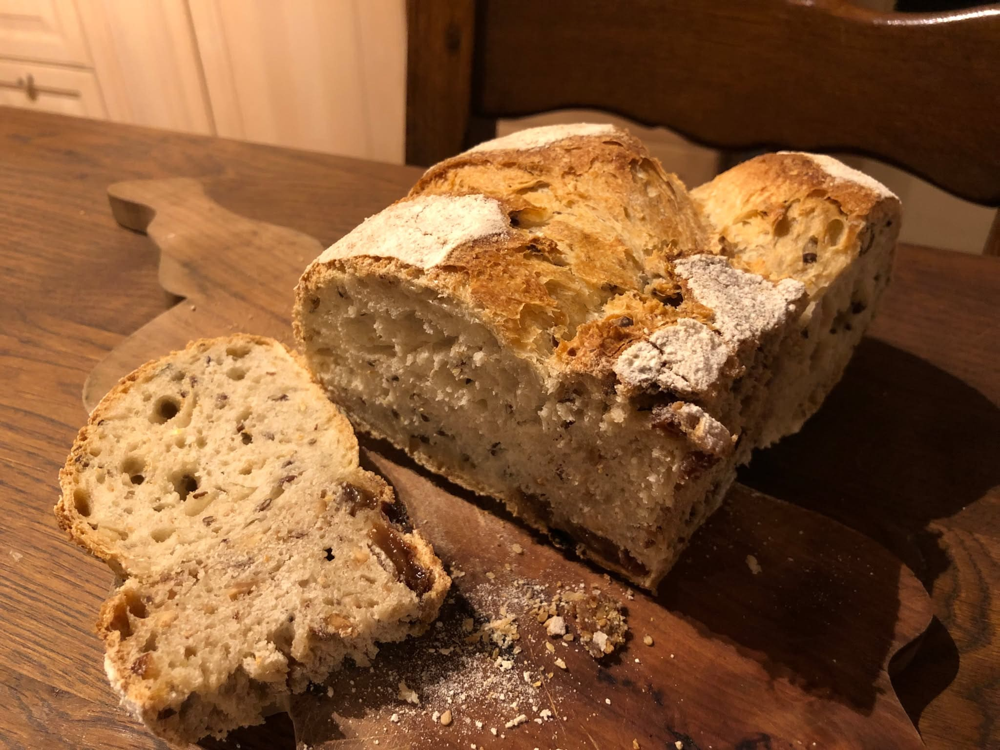

De la graine au pain 🌾
La boulangerie est le coeur de l'activité du paysan-boulanger. C'est là que se concrétise tout son travail. L'idée de l'activité de paysan-boulanger vient de l'envie de proposer un produit fermier, cohérent et complet.
Grâce à la culture de céréales et à la meunerie, le pain sera fabriqué à 100% sur la ferme. Cela permet aussi une meilleure valorisation du travail, une plus grande autonomie et une garantie du respect de nos valeurs.
Vous trouverez une large gamme de pains au levain, de la brioche mais également des pâtes fraîches et, pour du plaisir occasionnel, quelques pâtisseries.
Le pain au levain 🥖
Les matières premières du pain au levain sont simples : de la farine, de l'eau, du levain et une pointe de sel. La magie opère quand on découvre comment fabriquer du levain. Il suffit de mélanger, dans de bonnes conditions, de la farine et... de l'eau. C'est tout.

Le levain naturel apporte de multiples avantages :
- une meilleure conservation
- du goût
- une meilleure digestibilité
- un meilleur apport nutritif
- de l'indépendance à la production
Les étapes de fabrication 🤲
Concernant sa production, voici les différentes étapes de la fabrication du pain :
- Le frasage/pétrissage correspond au mélange de toutes les matières premières (farine, eau, levain et sel). Il a pour but de former une pâte homogène avec un réseau glutineux formé.
- La pousse est un temps de fermentation à température ambiante de quelques heures.
- Le façonnage est réalisé à la main et permet la mise en forme de la pâte en pâton.
- L'apprêt est un temps de fermentation à froid qui permet, notamment, le développement des arômes des pâtons durant la nuit.
- La cuisson au four à bois transforme les pâtons en délicieux pains finis en +- 50 minutes.
Le four 🔥

Le four utilisé est un four maçonné à sole tournante à chauffe indirecte. Cela permet d'enfourner et défourner rapidement et en continu les pains.
Le feu de bois déporté peut chauffer le four, tout au long de la cuisson. Une fois fermé, sa grande inertie permet de garder la chaleur d'un jour à l'autre.


